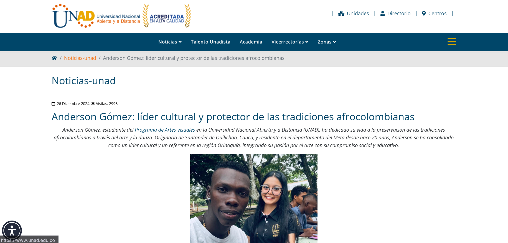
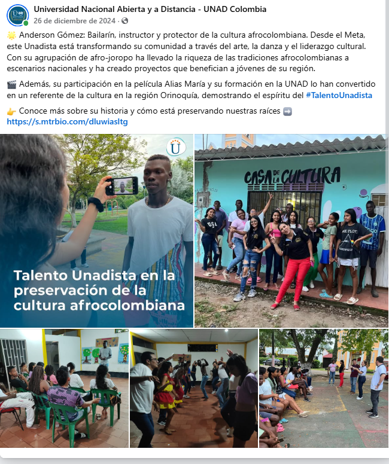
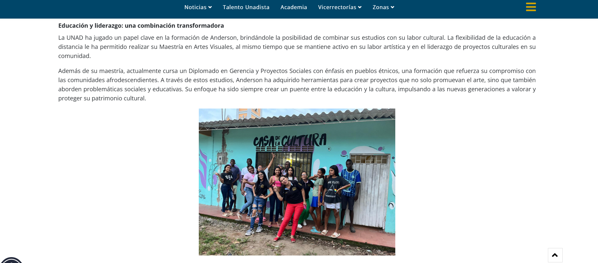

¿Quiénes somos?
La Universidad Nacional Abierta y a Distancia (UNAD) es una institución pública de educación superior en Colombia que promueve el acceso inclusivo al conocimiento mediante modelos flexibles apoyados en tecnologías digitales.
En el marco de proyectos sociales y comunitarios, la UNAD acompaña procesos de transformación digital con enfoque territorial, integrando investigación, formación y proyección social para fortalecer iniciativas que preservan la memoria cultural y el desarrollo comunitario..
Misión
Contribuir al fortalecimiento de procesos comunitarios mediante estrategias de innovación social y tecnológica, promoviendo la preservación del patrimonio cultural, la apropiación del conocimiento y el acceso equitativo a herramientas digitales.
Visión
Consolidarse como un referente académico en la articulación entre educación, tecnología y comunidad, impulsando modelos sostenibles de transformación digital con impacto social y cultural en los territorios.
Aporte a la plataforma digital
UNAD aporta capacidad técnica, acompañamiento metodológico y validación académica para consolidar una plataforma robusta, accesible y sostenible. También fortalece procesos de formación, investigación y gestión de contenidos culturales para Afrocrece Digital.
Galería institucional


